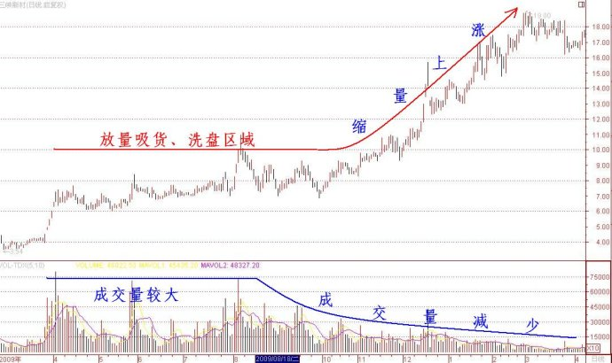

第107篇•教你炒股系列21：关于放量上涨与缩量上涨的问题（4）
谷为陵
通过前面的讨论，我们已经知道决定成交量大小的是卖盘，而决定股价涨跌的是买盘。在分析过放量上涨的三种情形后，再讨论缩量上涨的问题就显得相对简单了。
在正常情况下，绝大多数股票都应该呈现价涨量升，或者说放量上涨的状态。这是因为“买涨不买跌”的心理支配着买方的投资行为，所以，在股价持续上涨的情况下，买盘会不断增加。在买盘充足的情况下，一只股票就不存在流动性问题，卖盘可以随时卖出并成交。而随着股价的上涨，短线获利盘也会越来越多，相应的，这些短线获利盘中可转化为真实卖盘的数量也会越来越多。随着真实卖盘的增多，成交量也会越来越大，直至买卖力量发生逆转为止。
所以，缩量上涨并非股票价格运行的常态，而是一种特殊状态。成交量少，本质上是因为能够成交的卖盘稀少，这一般发生在流动性不足的情况下。只有在股价下跌，特别是处于阴跌的时候，才会出现流动性不足的问题，因为此时买方的买进意愿很低，导致买盘不济，卖盘难以成交，成交量就会很少。现在的问题是，在股价持续上涨的时候，流动性充裕，为什么还会出现缩量的情况呢？
严格说来，缩量上涨有两层含义：一是相对的缩量，是指在上涨中过程中，成交量逐渐减少，成交量呈现前高后低的分布状态，但日均换手率很可能并不低；二是绝对的缩量，是指在上涨中过程中，成交量一直很小，几乎呈现无量上涨的状态，日均换手率很低，往往不到5%。
相对的缩量，主要出现在爆发性题材股以及控盘式庄股上。爆发性题材股就是上一篇博文中，如成飞集成的“先放量、后缩量”的情况。而控盘式庄股，在庄家吸货和洗盘期间，往往会有较明显的放量过程。一旦庄家完成吸货和洗盘，开始拉高股价时，因外面已经没有什么抛盘了，所以，成交量反而减少，股价呈现缩量上涨的情况。这方面的案例极多，我仅举一个近期的三峡新材案例：以下是三峡新材2009年2月至2010年3月走势与成交量图：

绝对的缩量，主要体现在大盘绩优成长股上。比如，2006年至2007年10月的万科、中信证券，以及长期大牛股贵州茅台、云南白药等。这些股票都曾是大牛股，股价上涨了十几倍至几十倍，但在它们涨幅如此巨大的上涨过程中，日均换手率一般不超过5%。其中，贵州茅台自2006年1月至2008年1月上涨了20倍，但在此期间，该股的日均换手率还不到1%！所以，对于大盘绩优成长股，千万不要被它们的低换手率迷惑，想当然的认为它们不放量或者换手率低股价就涨不高。这也许是绝大多数依据大成交量和高换手率选股的短线客，往往会在大牛市中踏空这些的大盘绩优成长股的主要原因。要记住，对于这些大盘绩优成长股，若出现5%的日换手率就算是巨量，要是出现10%的日换手率，就是天量！
关于依据成交量进行短线选股，以及依据成交量判断买卖点等问题，留待以后再讨论吧。